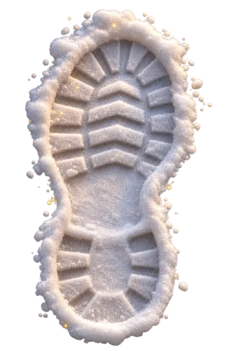

Follow Santa on Christmas Eve
JingleMoon is a Christmas app for families. Watch Santa's magical route on a 3D globe, count down the days, chat with Santa, write him a letter and fill Santa's Workshop with keepsakes.
No ads. No tracking. No account.
Coming to the App Store soon.
What is inside
Home, with the globe and the countdown
A turning globe and a countdown to Christmas Eve, with home screen widgets and a Lock Screen countdown. Pick the city Santa should visit; the app never asks for your location.
Practice Flight and Christmas Eve live flight
Watch the Practice Flight any day. When the flight window opens, the same journey becomes the live flight, with a close-up of the city on Apple Maps. Santa's magical route is simulated for fun.
Chat with Santa, safe and kind
Santa answers in friendly, written replies that stay on Christmas. Chat stays on the device. Where Apple's on-device model is available, it can help write replies in reviewed languages; nothing is sent to a server. Worried messages point to a trusted grown-up.
A letter to Santa and a Nice List certificate
Write a letter and get a reply and a Nice List certificate. Delivery is pretend: the letter is saved only on the phone and goes nowhere else. A grown-up can share the certificate.
Santa's Workshop
Optional one-time gifts that keep the magic alive. Each is bought once and kept, with no subscription. Keepsakes are made on the device and only a grown-up can share them.
Keepsakes
Kind Heart, Letter of Belief and Santa's Golden Seal, with the child's name.
Adopt a reindeer
Pick one of eight reindeer, get its picture and a letter. It leads the sleigh on the globe.
Santa's Visit
On Christmas Eve and Christmas Day the tracker shows Santa visited your home city.

Magic Kit printables
Boot prints, reindeer food label and a door sign with the child's name.
Advent calendar
24 doors, one for each day of December.
Snow globes
Six globes to shake.
JingleMoon is free to download. A small free allowance is included; an optional upgrade (weekly, monthly or yearly subscription, or a one-time lifetime purchase) unlocks unlimited chats, unlimited letters and every certificate design. See the terms and the privacy policy.
Made for families
No ads, no tracking and no accounts. Sharing, reminders, usage statistics and deleting data sit behind a grown-ups check, and every purchase is confirmed in Apple's own payment sheet. Anonymous usage statistics are off until a parent says yes. Questions? Visit Support.